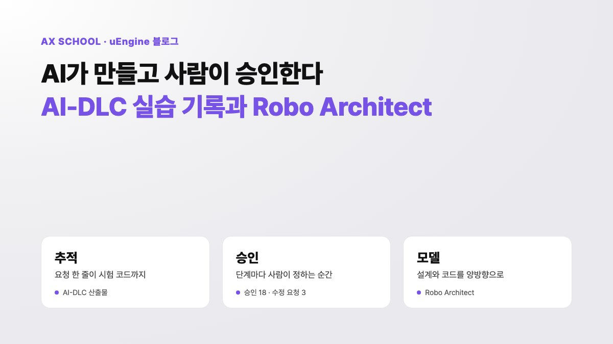

어셈블리에서 C로, 코드에서 사양으로 — AI-DLC와 Robo Architect

1. "컴파일러를 믿을 수 있나?"
1970년대, 운영체제(Unix)와 시스템 개발에 C 언어를 쓰기 시작하자 베테랑 어셈블리 프로그래머들은 거세게 반발했습니다.
- "컴파일러가 사람의 최적화를 따라올 수 없다." 어셈블리로 개발할 때는 레지스터 하나, 클록 하나까지 사람이 직접 제어했습니다. 컴파일러가 만든 기계어는 쓸데없는 분기가 많아 무겁다는 비판을 받았습니다.
- "결국 디버깅하려면 어셈블리를 알아야 한다." 프로그램이 멈추면 메모리 덤프와 어셈블리를 들여다봐야 했습니다. 그러니 C만 쓸 줄 아는 개발자는 반쪽짜리라는 논리였습니다.
- "하드웨어 제어권을 잃는다." 특정 주소를 다루는 미세한 타이밍이나 하드웨어 인터럽트는 C로 제어할 수 없다고 했습니다.
그 뒤의 변화는 우리가 아는 대로입니다. 컴파일러의 최적화 기술이 발전하면서 사람이 짠 어셈블리보다 나은 코드가 늘었습니다. 하드웨어가 빨라지면서 몇 퍼센트의 성능 차이보다 개발 속도와 다른 환경으로 옮기기 쉬운지가 훨씬 중요해졌습니다. 어셈블리는 사라지지 않았지만 부트로더, 커널 초기화, 실시간 임베디드 칩처럼 전문적인 일부 영역에만 남았습니다. 산업 전반에서는 C와 그보다 상위 수준의 언어로 넘어갔습니다.
2. 50년 뒤, 같은 논쟁
지금 AI 코딩(바이브 코딩)을 둘러싼 논쟁도 놀라울 만큼 비슷합니다. 사람이 직접 다루는 대상이 한 단계 더 추상화될 뿐입니다.
| 구분 | 1970~80년대 (어셈블리 → C) | 지금 (직접 코딩 → AI) |
|---|---|---|
| 사람이 쓰는 것 | 레지스터·명령어 → 문법·함수 | 문법·함수·로직 → 자연어 사양·프롬프트 |
| 비판하는 쪽 | "어셈블리를 모르면 메모리 누수와 성능 저하를 못 잡는다." | "AI가 짠 코드를 한 줄씩 검증하지 않으면 사고가 난다." |
| 낙관하는 쪽 | "구조와 설계만 C로 짜면 컴파일러가 알아서 한다." | "입출력 명세와 시험(사양)만 정교하면 내부는 상관없다." |
앞으로의 흐름도 비슷할 가능성이 높습니다. AI가 만드는 코드의 품질이 높아지고 자동 시험과 정적 분석이 정교해질수록, 사람이 코드를 한 줄씩 읽는 데 드는 비용은 감당하기 어려워집니다. 시스템 코어, 보안 점검, 고성능 최적화에서는 여전히 코드 수준의 검증이 필요할 것입니다. 하지만 대부분의 업무 시스템 개발에서는 무게중심이 옮겨 갈 것입니다.
"어셈블리를 직접 다룰 줄 알아야 진짜 엔지니어인가?"라는 옛 질문이 지금은 "코드를 직접 치고 한 줄씩 읽어야 진짜 개발자인가?"라는 질문으로 모습을 바꿔 돌아왔습니다.
3. 이제 사양이 소스 코드입니다
C 시대에 사람은 C 코드를 쓰고 컴파일러를 믿었습니다. 컴파일러를 믿을 수 있었던 것은 검증과 시험을 거쳤기 때문입니다. 사양 주도 개발(SDD, Spec-Driven Development)도 원리는 같습니다. 사람은 무엇을 만들지 사양으로 정합니다. AI는 이를 코드로 옮기고, 그 결과는 자동 시험과 단계별 검증으로 확인합니다.
| C 시대 | 사양 주도 개발 | |
|---|---|---|
| 사람이 쓰는 것 | C 코드 | 요구사항, 인수 조건, 설계 결정 |
| 번역하는 것 | 컴파일러 | AI 에이전트 |
| 신뢰의 근거 | 컴파일러 검증과 시험 | 자동 시험, 검증 관문, 사람의 승인 기록 |
| 하위 수준의 작업이 남는 곳 | 부트로더, 커널 초기화 | 보안 점검, 고성능 최적화, 시스템 코어 |
실제로 어떻게 이어지는지 문장 하나로 살펴보겠습니다. 우리가 AI-DLC로 만든 주차권 예약 앱에서는 처음 요청한 문장 하나가 인수 조건이 되고, 그대로 시험 코드가 됩니다.
.isEqualTo(new ParsedQuery("강남역", 2));
사람은 이 코드를 한 줄씩 읽지 않았습니다. 사양을 정하고, 시험 886개와 목표별 판정표로 결과를 확인했습니다.
사양이 소스 코드가 되면 질문이 바뀝니다. "코드를 누가 짰나"보다 "사양을 어떻게 정하고, 어디에 담고, 코드와 어떻게 맞춰 가나"가 중요해집니다. 이 질문에는 여러 가지 답이 있습니다. 그중 두 가지를 비교해 보겠습니다.
4. 사양을 다루는 두 가지 길: AI-DLC와 Robo Architect
AI-DLC(AI 주도 개발 생애주기)는 AWS Labs가 공개한 오픈소스 방법론이자 도구입니다. Claude Code 같은 코딩 에이전트에 설치하면, 에이전트가 의도 → 요구사항 → 설계 → 유닛 → 구현 → 시험 단계를 차례로 진행합니다. 단계마다 사람에게 질문하고 작성한 문서를 승인받습니다. 모든 결정은 감사 기록으로 남기고, 사양은 마크다운 문서로 저장소에 쌓아 갑니다.
Robo Architect는 유엔진의 설계 도구입니다. 요구사항을 Epic → Feature → User Story로 나누고, DDD로 업무 경계(바운디드 컨텍스트)를 정합니다. 명령·이벤트·화면은 하나의 설계 모델로 관리합니다. 이 모델에서 코드와 시험을 만들고, 개발자가 코드를 고치면 변경 내용을 다시 모델에 반영합니다.
표의 링크를 누르면 두 튜토리얼에서 같은 일을 어떻게 하는지 바로 비교해 볼 수 있습니다.
| AI-DLC | Robo Architect | |
|---|---|---|
| 사양을 담는 곳 | 단계별 마크다운 문서(요구사항, 스토리, 설계, 유닛, 볼트 계획)를 Git에 코드와 함께 저장합니다. ↗ 튜토리얼: 산출물 찾아보기 | 설계 모델(바운디드 컨텍스트, 애그리거트, 명령, 이벤트, 화면)을 그래프로 보며 수정합니다. ↗ 소개 페이지에서 보기 · ↗ 튜토리얼 8장 |
| 일하는 방식 | 33개 단계 중 일의 성격(스코프)에 맞는 단계만 차례로 진행합니다. 각 단계는 질문 → 문서 → AI 검토 → 사람 승인 순서로 진행합니다. ↗ 튜토리얼 9장 | 제안(Proposal) 단위로 의도 → 계획 → 구현 → 검증 → 수락 순서로 진행합니다. 분해 방식(간소화, 상세 DDD, ODA 표준)을 선택합니다. ↗ 소개 페이지에서 보기 · ↗ 튜토리얼 3장 |
| 사람의 역할 | 단계마다 승인하거나 수정을 요청합니다. 질문·답변·승인은 시각과 함께 감사 기록에 남습니다. ↗ 튜토리얼 12장(수정 요청) · ↗ 8장(감사 기록) | 모델의 변경 내용을 미리 보고 확정합니다. 화면에서 경계와 관계를 직접 수정합니다. ↗ 튜토리얼 5장(Plan 확정) |
| 사양과 코드 | 문서 → 코드 방향으로 이어집니다. 추적표로 인수 조건과 구현·시험 파일을 연결합니다. ↗ 튜토리얼 15장 | 양방향으로 이어집니다. 명세 변경은 구현에(Spec Align), 코드 변경은 명세에 반영합니다(Spec Backfill). ↗ 소개 페이지에서 보기 · ↗ 튜토리얼 9장 · ↗ 7장 |
| 화면 설계 | 화면 상태와 상호작용을 문서로 정리합니다. ↗ 튜토리얼 11장 | 이벤트 모델과 화면을 연결해 함께 설계합니다. ↗ 소개 페이지에서 보기 · ↗ 튜토리얼 8장(설계 캔버스) |
| 기존 시스템 | 역공학 단계에서 기존 코드를 읽고 시작합니다. | Robo Analyzer가 코드·DB·문서에서 업무 규칙을 뽑아 모델에 연결합니다. ↗ 튜토리얼 13장 |
| 잘 맞는 곳 | 팀이 정해진 절차를 따르고 승인 기록을 남기며 개발할 때 | 업무 경계가 복잡하고, 설계를 눈으로 보며 코드와 계속 맞춰야 할 때 |
두 도구는 경쟁하기보다 서로 부족한 부분을 채워 줍니다. AI-DLC는 「어떤 순서로 묻고 누가 승인하는가」라는 절차에 강점이 있습니다. Robo Architect는 「사양이 무엇으로 이루어져 있고 코드와 어떻게 이어지는가」라는 모델에 강점이 있습니다.
5. 사람의 역할은 어디로 옮겨 가나
컴파일러가 나온 뒤에도 프로그래머는 사라지지 않았습니다. 레지스터를 세는 대신 알고리즘과 구조를 고민하게 되었습니다. AI 시대에도 같은 일이 일어납니다. 손으로 하던 일은 AI가 맡고, 사람은 판단에 시간을 씁니다. 이번 실습에서도 AI의 작업은 단계마다 몇 분이면 끝났습니다. 사람이 시간을 들인 일은 검토와 판단이었습니다.
| 역할 | 지금까지 시간을 들인 일 | 앞으로 더 집중할 일 |
|---|---|---|
| 기획자·PO | 요구사항 문서 쓰기 | 시험으로 확인할 수 있는 인수 조건 쓰기, AI의 질문에 답하며 모호함 없애기 |
| 아키텍트 | 설계 문서 작성, 코드 리뷰 | 업무 경계와 서비스 간 약속(계약) 정하기, AI의 검토 의견을 받아들일지 판단하기 |
| 개발자 | 코드 작성 | AI가 사양을 코드로 옮기는 과정 감독, 검증 설계, 보안·성능처럼 전문성이 필요한 영역의 코드 작성 |
| QA | 시험 수행 | 자동 시험과 합격 기준 설계, 기준을 낮추지 않는 판단 |
| 팀 리드·PM | 일정 관리와 작업 배분 | 누가 무엇을 승인하는지 정하기, 사람의 승인을 기다리는 시간 줄이기 |
역할은 달라도 집중해야 할 일은 세 가지입니다.
- 사양: 무엇을 만들지 명확히 정하는 힘입니다. 요구사항, 인수 조건, 업무 경계가 여기에 해당합니다.
- 검증: AI가 만든 결과를 신뢰할 근거를 설계하는 힘입니다. 자동 시험, 합격 기준, 단계별 검증 관문이 여기에 해당합니다.
- 승인과 책임: 누가 무엇을 언제 승인했는지 남기는 체계입니다. 승인자 지정, 검토 기준, 결정 기록이 여기에 해당합니다.
팀의 구성과 일하는 방식도 바뀝니다. 기획 → 설계 → 개발 → 시험 순서로 일을 넘기던 팀이, 여러 역할의 구성원이 모여 같은 사양을 동시에 검증하는 작은 팀으로 바뀝니다. AI-DLC는 이를 몹 정교화(Mob Elaboration)라고 부릅니다.
어셈블리 시대의 실력이 레지스터를 아는 데 있었다면, AI 시대의 실력은 사양을 정확히 쓰고 검증 방법을 아는 데 있습니다.
6. 맺으며: 이 전환을 팀과 함께
이 전환은 도구 설치만으로 완성되지 않습니다. 사양을 쓰는 습관, 검증을 설계하는 방법, 승인 규칙을 팀이 함께 익혀야 합니다. 유엔진 AX School은 누구나 따라 할 수 있는 공개 교재로 시작합니다. 교재로 방법을 익힌 뒤에는 우리 회사의 실제 업무를 다루는 워크숍과 컨설팅 교육으로 이어집니다. 역할에 따라 출발점이 다릅니다.
- 기획자·PO: AI 기획·설계 도구 실습 → AI-DLC 레벨 1(요구사항 장) → Agent Storming 워크숍
- 개발 리드·아키텍트: AI-DLC 레벨 1 → 레벨 2(팀 규칙, 설계·유닛·볼트, TDD 구현) → 우리 팀 규칙 정하기
- 경영진·전환 담당: AX 전환 컨설팅 교육 → 우리 회사 AI 업무교실
자세한 경로는 AX School 「누가 어디부터」에서 확인할 수 있습니다. 구성과 일정은 상담을 통해 정합니다. 우리 팀의 역할을 어떻게 바꿔 갈지 함께 고민하고 싶다면 문의하기로 연락 주세요.
먼저 혼자 실습해 보고 싶다면 Claude Code × AI-DLC 핸즈온(이 글의 C 언어 이야기는 2장에 있습니다), 실습 산출물을 모아 둔 GitHub 저장소, Robo Architect 튜토리얼에서 시작할 수 있습니다.
참고 자료